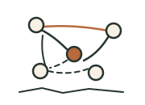
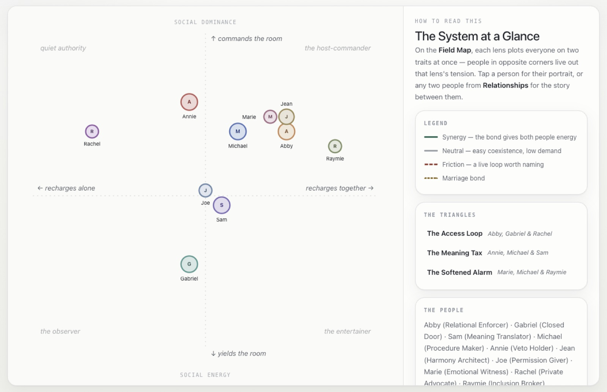
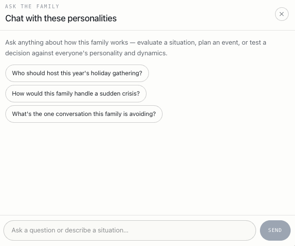
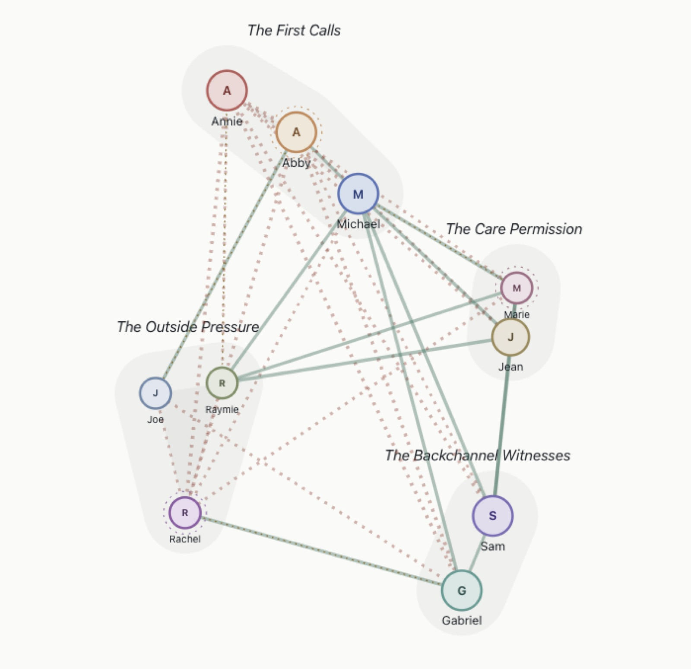
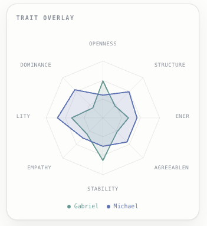
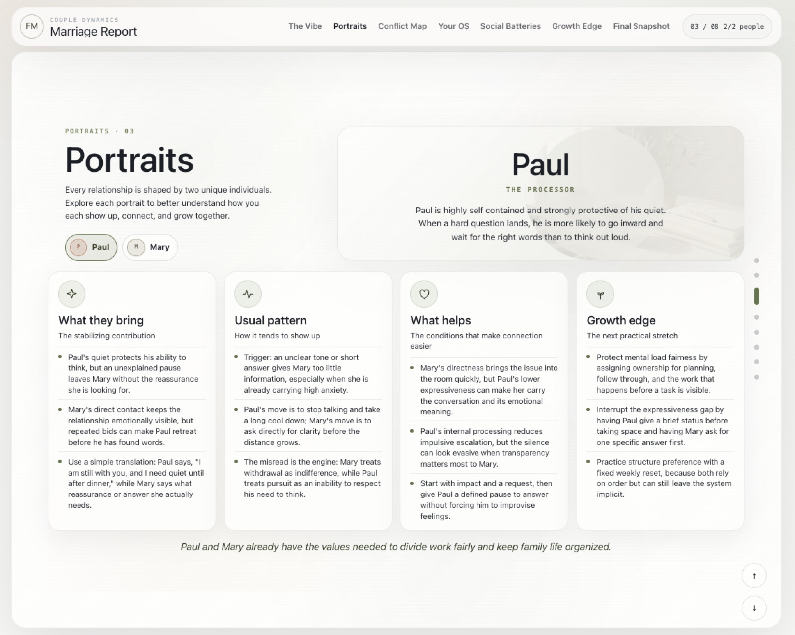
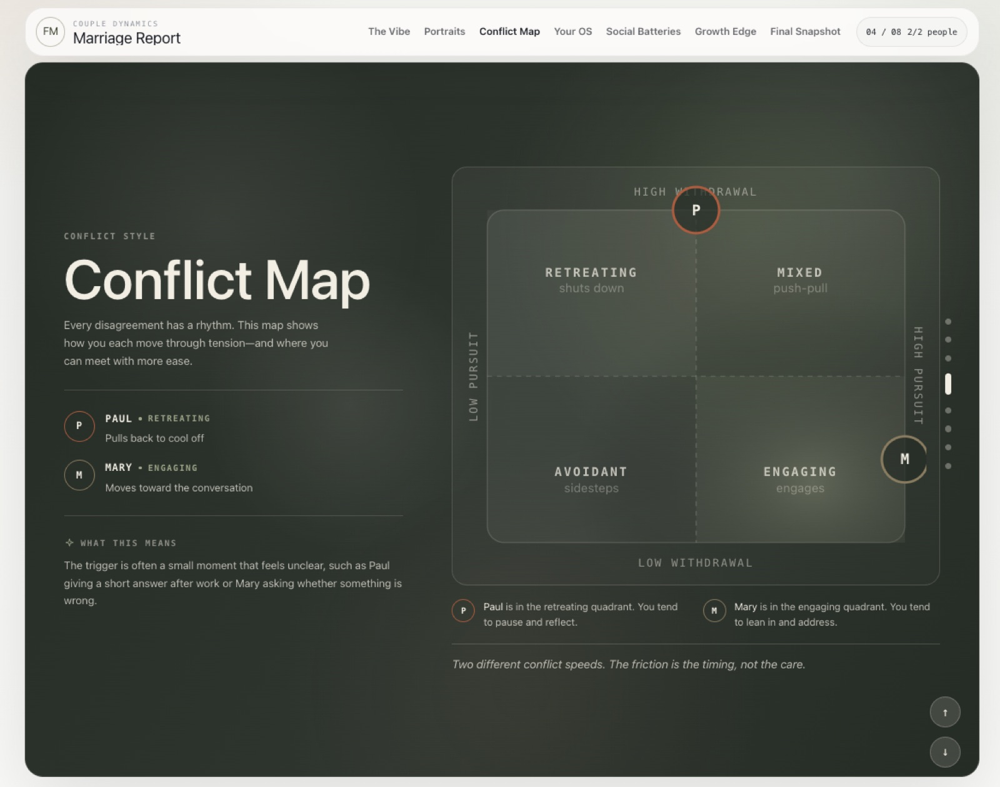

Dynamics Report
Personality tests describe one person at a time. A family or a team is a room full of people reacting to each other at once. Dynamics Report maps the whole room: who steadies whom, where the friction loops live, and which three people keep landing in the same triangle.
About ten minutes. No account needed for the personal report.


Why a group needs its own report
Most tools stop at the individual: here is your type, here are your strengths. That leaves out the part that actually causes trouble at Thanksgiving or in a Monday standup. A group is not a list of one-to-one relationships. It is everyone’s patterns colliding at the same time, and the shape of that collision is what a Dynamics Report describes.
Who it’s for
Groups of any size get the group report. Two people get the Marriage Report. Pick a case to see the pages it leans on.
Family reportThe whole family on one map, and a chat that knows everyone in it.

Group reportEvery working relationship drawn, and any two people compared trait by trait.


Marriage ReportA portrait of each of you, and a map of how your disagreements move.


Group reportWhere each person sits on a lens, and which bonds carry the group.
How a group report comes together
- Create a report and add the people in it.
- Pay once and share the invite links. Nobody else needs an account.
- Everyone takes the 80-question assessment on their own time.
- The report generates when the last person submits, at a permanent link the group can keep.
Start with yourself.
The personal report is free, takes about ten minutes, and needs no account. When you’re ready, add the rest of the room.
For reflection and better conversations, not diagnosis. Built by Gabe Fennema. Questions or ideas: gmfennema@gmail.com.